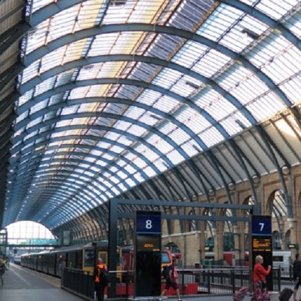
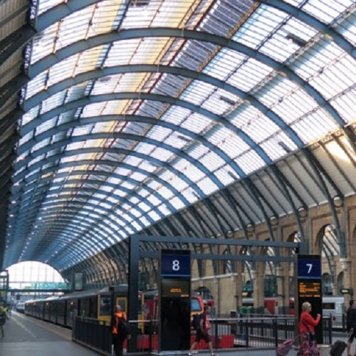
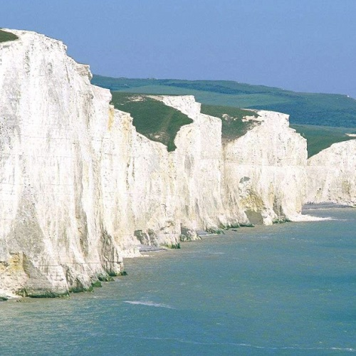
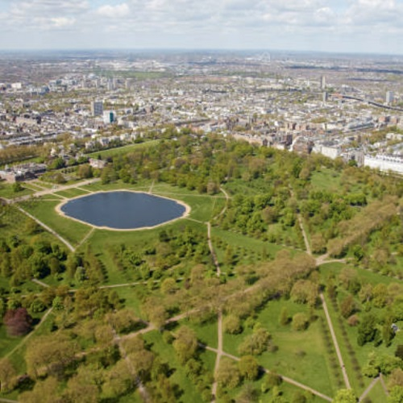
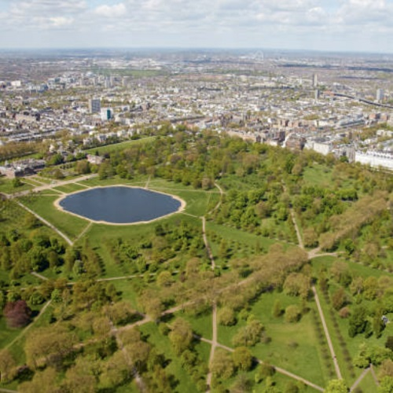
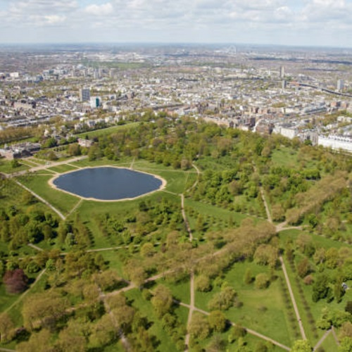

ハリーポッターツアー
 


仲間のハリー・ポッター愛好家と一緒に、英国の豊かな自然とユニークな街並みを探索しましょう!
英国のさまざまな島々を旅すると、多くの自然や動物種と接触することになります。
旅行中には、英国の自然のおいしい特産品を試す機会もあります。
イギリスの自然を知り尽くしたガイドが同行する、見逃せないツアーです！
歴史ツアー


このツアーでは、ロンドンの素晴らしい景色をお楽しみいただけます。
ビッグベンとバッキンガム宮殿は、19世紀にタイムスリップします。
世界の名所を巡る最もスタンダードなツアープランです。
このツアーを選んで、楽しい旅を！
自然ツアー

 


仲間のハリー・ポッター愛好家と一緒に、英国の豊かな自然とユニークな街並みを探索しましょう!
英国のさまざまな島々を旅すると、多くの自然や動物種と接触することになります。
旅行中には、英国の自然のおいしい特産品を試す機会もあります。
イギリスの自然を知り尽くしたガイドが同行する、見逃せないツアーです！
- イギリスの入国手続きは厳しい。 求められるものに備えて書類を用意してください。帰りの航空券、ホテルの場所、滞在する場所、旅行の日付（ある場合）。
- フード付きの撥水ジャケットを着用してください。 山と同じように、天気はすぐに変わります。短時間で簡単に。
- レシートに「サービス料別」とある場合は、チップが必要です。 料金の10%程度のチップを預けることができます。
- 英国では駅、プラットホーム、バス停での喫煙は禁止されています。 また、屋外での飲酒が禁止されている場所もありますのでご注意ください。
- イギリスの食べ物はまずいことで有名です。 いくつかの英国料理には、独自の塩とコショウまたはソースが添えられていることを知っておく必要があります。
- レストランは非常に高価なので、価格を抑えたい場合は、レストランではなくパブや市場で食事をする必要があります.